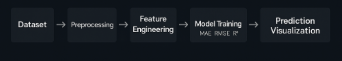

Weather Predictor — ML-Based Forecasting Tool
A machine-learning powered forecasting model that predicts future temperature and humidity using historical climate data. Includes data cleaning, feature scaling, model training, evaluation and visualization for accurate climate estimation.

Project Highlights
Accurately forecasts weather trends by learning patterns from historical datasets.
Temperature & Humidity Prediction
Supervised regression models forecast climate changes with increasing accuracy.
Performance Visualization
Graphs clearly showcase prediction vs actual values for interpretability.
Optimized ML Pipeline
Feature scaling, train-test split, cross-validation and evaluation metrics integrated.
Model Workflow
- 📌 Dataset collection & loading (CSV format)
- 📌 Handling missing values & outliers + feature scaling
- 📌 Model training using Random Forest & Linear Regression
- 📌 Evaluation using MAE, RMSE & R² score
- 📌 Visualization of results using Matplotlib & Seaborn
Model Performance Summary
| Model | MAE | RMSE | R² Score |
|---|---|---|---|
| Linear Regression | 6.28 | 8.03 | 0.84 |
| Random Forest (Best) | 4.91 | 6.15 | 0.91 |
🔥 Random Forest delivered the best accuracy due to its ability to capture non-linear weather patterns.
Screenshots

{kind=link}
Challenges & Learnings
Challenges Faced
- 🔸 Handling missing and fluctuating values in raw weather data
- 🔸 Maintaining prediction stability across different seasons
- 🔸 Selecting reliable error metrics for ML regression models
Key Learnings
- 🔹 Practical feature engineering dramatically improves accuracy
- 🔹 Cross-validation helps prevent overfitting on seasonal datasets
- 🔹 Visualization builds trust in ML model predictions
Want to explore the source code?
Notebook includes EDA, preprocessing, training pipeline and prediction logic.
Open GitHub Repository